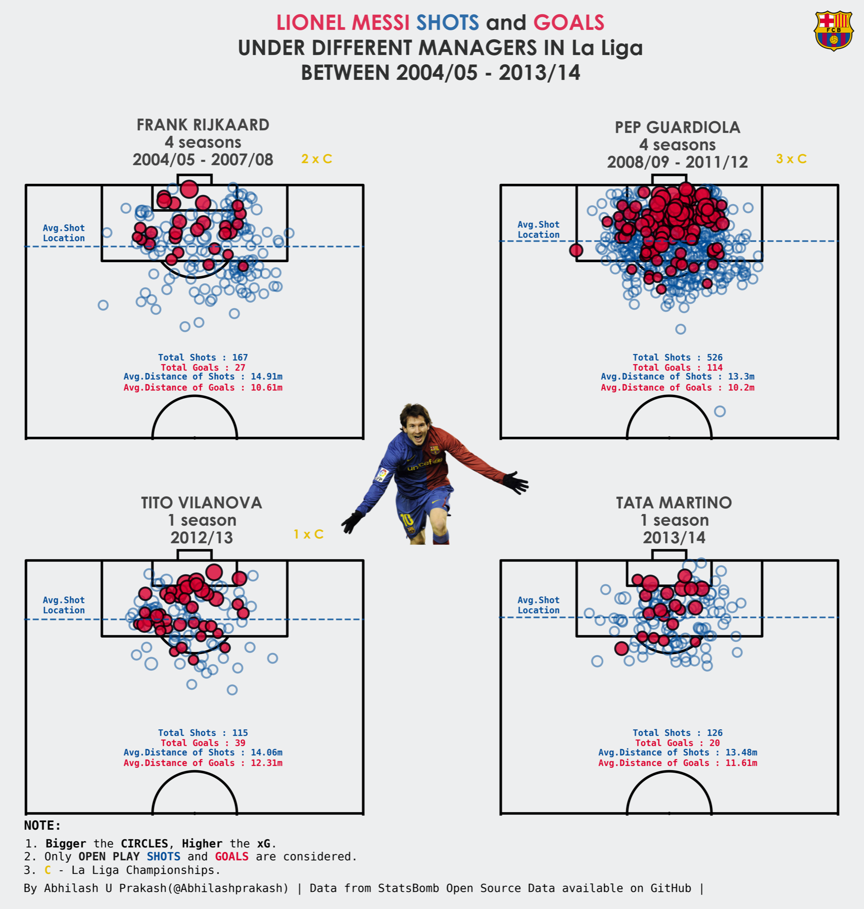
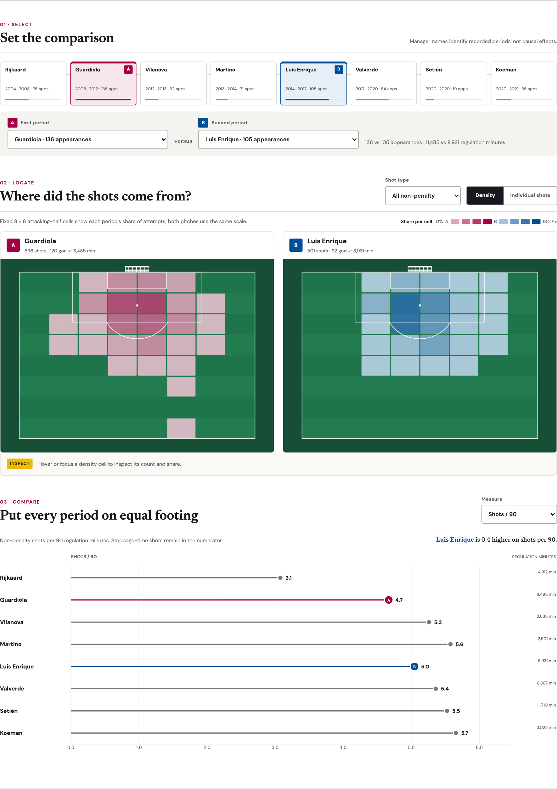

Visualization Critique and Redesign · 500–800 word report
Messi, Repositioned
Comparing his La Liga shot profile across Barcelona manager periods
Original visualization and context
Abhilash Prakash’s Lionel Messi Shots and Goals Under Different Managers compares Messi’s shot locations across eight Barcelona manager periods from 2004/05 to 2020/21. The original project combines StatsBomb data for earlier seasons with Understat data for 2014–2021. Its likely audience is football supporters and analysts seeking to understand how Messi’s shooting changed over his La Liga career. Viewers should be able to locate common shooting areas, compare periods, and identify changes in volume or efficiency. Because these are observational periods, this redesign describes differences that coincide with managers; it does not claim that managers caused them.

Critique
The original makes two effective choices. Placing shots on a football pitch gives every mark immediate spatial meaning, while repeated, consistently scaled pitches establish a sensible small-multiple structure. Goals are also distinguished from unsuccessful attempts, supporting outcome comparison.
However, four problems limit the intended tasks. First, hundreds of opaque marks overlap in central areas. A viewer sees a dense cloud but cannot reliably compare its shape or concentration. Second, raw totals confound shooting frequency with exposure: Guardiola’s 136 recorded appearances naturally produce more marks than Setién’s 19. Third, splitting eight periods across two images forces readers to compare from memory, while small annotations weaken the visual hierarchy. Fourth, combining providers introduces a measurement discontinuity because event definitions and expected-goals models may differ. Penalties and free kicks also influence apparent chance quality and distance when treated as one undifferentiated set.
Redesign rationale
The redesign uses one pinned StatsBomb Open Data snapshot for all 17 La Liga seasons. The audit found 524 Barcelona match files, 518 positive-regulation-minute Messi lineup appearances, and 2,352 shots. Manager assignment comes from each match; 39 missing manager records are labeled as inferred only when the season contains one known Barcelona manager. Playing time is calculated from the union of lineup intervals, preventing tactical position changes from double counting minutes.
Three linked decisions answer the critique. First, a chronological career timeline places every period in one interface; clicking a period replaces B, while a swap control changes the A/B roles without a second dropdown panel. Second, aligned attacking-half pitches switch between individual events and fixed 8-by-8 bins. Bins encode each cell’s share of a period’s filtered shots on a common scale, while a light Gaussian blur softens the rendered heat field without changing the underlying counts. Hover or focus reveals cell counts; selecting an event pins its match details, making the aggregation trade-off reversible. Third, an animated dot plot compares shots per 90, non-penalty xG per 90, or xG per shot. The default excludes penalties, and an open-play/free-kick filter updates spatial and quantitative views together.

Original versus redesign
The redesign reveals distinctions hidden by raw point clouds. Koeman’s period has the highest observed non-penalty shot frequency (5.66 per 90), whereas Guardiola’s has the highest average non-penalty chance quality (0.138 xG per shot). Free-kick frequency rises from 0.09 per 90 under Rijkaard to 1.58 under Setién, demonstrating why shot type must remain filterable. These findings make frequency, quality, and location separate comparison tasks instead of treating “more dots” as better performance.
Limitations remain. Manager periods also differ in Messi’s age, role, teammates, opponents, and sample size. Historical coding may vary within one provider; 26 matches lack an xy-fidelity version value. Density sacrifices exact event locations, and the 39 inferred manager fields reduce certainty. The interface therefore preserves individual shots, reports exposure, and uses descriptive rather than causal language.
References
Prakash, A. (2021). Lionel Messi Shots and Goals Under Different Managers.
StatsBomb. (2022). StatsBomb Release Free Lionel Messi Data: All Seasons From 2004/05–2020/21 Now Available.
StatsBomb. (2026). Open Data, commit 4b73468.